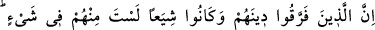

EHL-İ KİTAB’IN VE MÜSLÜMANLARIN
FIRKALARA AYRILMASI
159. Dinlerini parça parça edip guruplara ayrılanlar var ya, senin onlarla hiçbir
ilişkin yoktur. Onların işi ancak Allah’a kalmıştır. Sonra Allah onlara yaptıklarını
bildirecektir.
“Dinlerini parça parça edip grup grup olanlar” yahudi ve hristiyanlar “var ya”
Onlar, kendilerine gönderilen hak dini bölüp parça parça etmişler ve kendilerinden her
bir grup, dinin bir bölümüne sarılmışlardır. Onlardan her grup ayrı bir öndere tâbi
olmak suretiyle fırkalara ayrılmışlardır.
Rasûlullah (s.a.) şöyle buyurmuştur: “Yahudiler yetmiş bir fırkaya ayrıldılar.
Onlardan bir tanesi hariç, diğerlerinin tamamı cehennemdedir. Hristiyanlar da
yetmiş iki fırkaya ayrıldılar. Onlardan bir fırka hariç diğerlerinin tamamı
cehennemdedir. Ümmetim ise yetmiş üç fırkaya ayrılacaktır. Bunlardan biri hariç
diğerleri cehennemdedir.”[190]
Hadiste yahudi ve hristiyanlardan birer fırkanın cehennemde olmaktan istisna
edilmesi, onların neshedilmesinden önceki zamanlara göredir. Neshedildikten sonra
bütün fırkaları cehennemdedir.
“Senin onlarla” onların tefrikaya düşmeleri ile “hiçbir ilişkin yoktur.” Sen, onların
ayrılığa düşmelerini araştıracak değilsin. Sana muasır olan yahudi ve hristiyanlarla bu
konuda tartışmak ve onları ayıplamak durumunda değilsin.
“Onların işi Allah’a kalmıştır.” Bu cümle, yahudi ve hristiyanların tefrikaya
düşmeleri konusuyla ilgilenmemenin sebebini açıklamaktadır. Yani, Allah onların önce
ve sonra gelenlerine nasıl muamele edeceği hususunu yalnız kendi üzerine almıştır.
Onların işlerini hikmetinin gerektirdiği şekilde sevk ve idare eder.
“Sonra” kıyamet gününde Allah, “onlara yaptıklarını haber verecektir.” Âyette,
onlara yaptıklarının gösterilmesi, “tenbie” haber verme fiili ile ifade edilmiştir. İki fiil
aşağı yukarı aynı anlamdadır. Çünkü iki fiilde de “bilgi vermeye sebep olma” mânâsı
vardır. Bu ifade tarzının seçilmesi, onların işledikleri fiillerin kötü sonucunu
bilmediklerine dikkat çekmek içindir.
Mânâ şöyledir: Şahitlerin huzurunda dünyâda devamlı olarak yaptıkları kötü işlerin ne
kadar çirkin olduğunu ve onlara uygun olarak başlarına gelecek cezayı onlara haber
verecek ve bildirecektir.